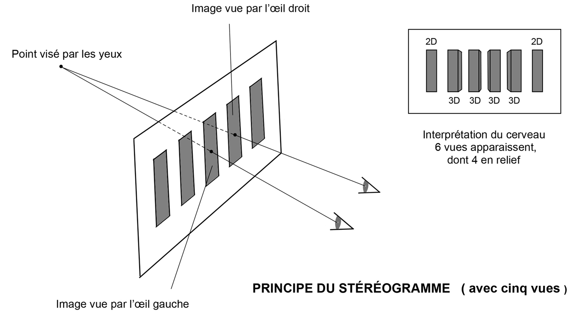
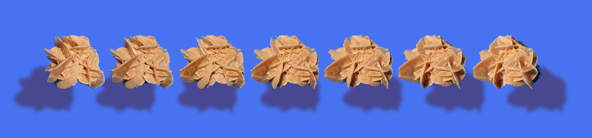

Comment voir un stéréogramme en 3D
Lorsqu'on regarde une image ordinaire, on fait converger la visée des deux yeux vers un même point de sa surface et ceux-ci se règlent sur la distance de l'image ; ils "accommodent". Si on éloigne ou rapproche l'image, on adapte aussi le regard à chaque distance pour conserver le point de convergence sur l'image. Le regard se focalise en permanence sur le plan de l'image et les deux yeux contemplent exactement le même point de celle-ci. En l'approchant très près des yeux, on oblige ceux-ci à converger fortement, on louche ; cette forte convergence devient douloureuse pour les yeux. Au contraire, quand on éloigne beaucoup l'image, le regard se détend et peut aller jusqu'à obtenir ce qu'on appelle "la vision parallèle", qui est plutôt une convergence faible. C'est vers cette vision qu'il faut tendre dans l'observation d'un stéréogramme, sans chercher à focaliser sur la surface de l'image. Bien qu'une loucherie en convergence puisse créer également la troisième dimension, mais en l'inversant, rendant concave une surface convexe. À la différence de l'inconfort que produit la loucherie convergente, le regard vers le lointain reste une vision très naturelle et généralement sans inconfort oculaire, comme peut l'être l'observation de l'horizon.
On regarde donc plus loin que la surface de l'image, comme si le regard la traversait; la netteté n'est plus, en théorie, réalisée sur l'image elle-même, chaque œil étant posé sur un point différent de celui de l'autre œil. Mais c'est pourtant là que, si on a pris soin de présenter à chaque œil une image correspondant à la perspective propre à sa position, on peut abuser notre cerveau, qui nous fait alors croire que nous voyons un objet réel, que nous pourrions attraper ou autour duquel nous pourrions tourner. Et l'image est alors beaucoup plus belle que lorsque nous nous contentons de la regarder en deux dimensions, elle est éthérée, elle semble aussi un peu plus large, les brillances ne sont plus de simples aplats de couleur claire mais bien des brillances, l'objet a pris corps, sa texture se ressent. À la différence du cas de l'hologramme, le stéréogramme ne produit aucune sensation d'immatérialité ni de faible rendu des couleurs et le spectacle est magnifique.
On peut observer, quand on a obtenu la "vision parallèle" et l'image en relief, qu'on voit un objet de plus que ceux réellement présents dans la série de l'image 2D. Par contre, on voit effectivement en relief un objet de moins que ceux de la série, les deux objets situés aux extrémités droite et gauche, images de la vue d'un seul œil, restant en 2D et plutôt flous.
Il y a plusieurs façons d'obtenir la "vision parallèle". Lorsqu'on en a une bonne habitude, on sait l'obtenir quasi instantanément. Et on sait aussi la conserver. Si on s'y essaie pour la première fois, ça peut être difficile et long. Il faut parfois user de patience, mais le résultat attendu en vaut la peine. Certaines personnes, malheureusement, n'y parviennent pas, encore qu'elles pourraient très probablement y parvenir en sachant insister, l'impossibilité physiologique étant sans doute rare. Les orthoptistes, spécialistes de la motilité oculaire, utilisent des stéréogrammes à trous et peuvent, du reste, conseiller des exercices pour habituer les yeux à la bonne "gymnastique", qui consiste à dissocier les fonctions vergence et accommodation.Il y a plusieurs façons d'obtenir la "vision parallèle". Lorsqu'on en a une bonne habitude, on sait l'obtenir quasi instantanément. Et on sait aussi la conserver. Si on s'y essaie pour la première fois, ça peut être difficile et long. Il faut parfois user de patience, mais le résultat attendu en vaut la peine. Certaines personnes, malheureusement, n'y parviennent pas, encore qu'elles pourraient très probablement y parvenir en sachant insister, l'impossibilité physiologique étant sans doute rare. Les orthoptistes, spécialistes de la motilité oculaire, utilisent des stéréogrammes à trous et peuvent, du reste, conseiller des exercices pour habituer les yeux à la bonne "gymnastique", qui consiste à dissocier les fonctions vergence et accommodation.
La méthode la plus rapide, celle qui demande peut-être de l'habitude, consiste à regarder le stéréogramme à une distance de vue normale, une trentaine ou une quarantaine de centimètres, et à laisser son regard partir dans le vague, comme s'il était soudain fatigué et ne voulait plus faire l'effort de se focaliser. Le temps qu'il faut alors au cerveau pour analyser et proposer son interprétation peut se réduire, avec l'habitude, quasiment à zéro.
Sinon on peut essayer en plaquant d'abord l'image tout près des yeux, donc sans vouloir la voir nette, sans loucher, puis en l'éloignant tout doucement sans chercher à focaliser mais en laissant le regard agir seul. Il semble que ce soit là la méthode la plus opérante dans les débuts, même si le premier essai n'est pas forcément le bon. La patience est d'une aide précieuse.
On peut encore, en commençant également par regarder de trop près, forcer les yeux à loucher, puis éloigner le stéréogramme jusqu'à la distance normale en laissant les yeux se détendre. Le regard, par soulagement, peut alors se détendre au-delà du réglage nécessaire à la nouvelle distance et adopter la "vision parallèle". Si on n'aime pas loucher car ce n'est pas très agréable, on peut encore focaliser son regard sur un point plus éloigné, sur un mur par exemple, puis amener le stéréogramme entre l'œil et le mur en s'efforçant de ne pas modifier volontairement la focale.
Quelle que soit la méthode employée, l'image, qui se dédouble, commence par se troubler, et il faut laisser au cerveau le temps de livrer sa nouvelle interprétation. À ce stade, au début, il faut vraiment savoir être patient. Et c'est alors comme un déclic qui se produit, de plus en plus automatique et rapide avec l'expérience. Cette dernière rend également beaucoup plus aisée la conservation du bon réglage focal et son adaptation à de nouveaux paradigmes visuels. Ainsi l'exploration d'images présentant une diversité de profondeur devient-elle facile.